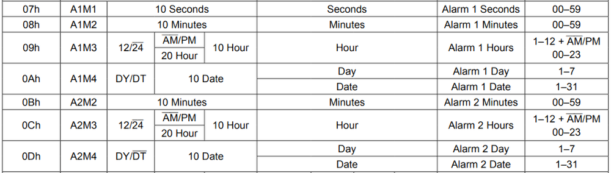

第二章——DS3231数据手册速览
1. DS3231基本参数
| 参数 | 参数值 |
|---|---|
| 供电电压 | 2.3V-5.5V |
| 通信方式 | I2C |
| 日期格式 | 秒,分,时,日,月,年(2000-2100) |
| 时间精度 | ±2分/年 |
| 温度精度 | ±3°，一分钟更新一次 |
| 闹钟 | 两个闹钟 |
| 支持的通信速度 | 100KHz标准模式，400KHz快速模式 |
2. DS3231接线图
DS3231和Arduino Uno接线图如下：

3. DS3231的寄存器列表
DS3231的I2C的7位地址为0x68，下面是DS3231的寄存器列表，这里我们仅对其做简单讲解，更多内容请参考数据手册：

3.1 0x00-0x06时间寄存器
这七个寄存器储存了DS3231的时间信息，我们可以通过这七个寄存器读取和写入时间的信息，在晶振使能位开启的情况下，时间寄存器中的信息会自动更新。
唯一需要注意的是，0x03这个寄存器用于存储星期，值从1-7共7个值，这个寄存器24H后自动更新+1，至于哪个数字对应哪个星期，我们自己约定就好了。
可以发现，DS3231存储时间数据的时候，采用BCD编码方式而不是DEC编码，因此在后面我们读取和写入数据的时候，要对数据进行相应的转换。

3.2 0x07-0x0D闹钟寄存器
DS3231的闹钟寄存器和时间寄存几乎相同，只是闹钟1有4个寄存器，存储秒，分，时，天(星期)，闹钟2只有三个寄存器，存储分，时，天(星期)。其中0x0A和0x0D寄存器的DY/DT位用于设置闹钟是以天位单位闹铃，还是以星期位单位进行闹铃。如果是0，则对应天；如果是1，对应星期。默认值为0。
当当前时间与设置的闹铃时间一致后，对应的闹铃状态位会被写为1，我们可以通过这个闹铃状态位获取闹铃信息。

闹钟寄存器的最高位是闹钟响应模式掩码，你可以通过掩码设置闹铃模式，掩码信息如下：

3.3 0x0E-0x0F控制/状态寄存器
下面是DS3231控制/状态寄存器列表，这里我们只对其中部分位做介绍，其余位在使用过程中，保持默认即可：

3.3.1 EOSC#晶振使能位
该位用于控制DS3231的晶振是否使能，该位只在DS3231处于电池供电情况下有效，VCC供电该位无效。当该位为0时，晶振使能；为1时，晶振不使能，同时寄存器数据将处于静止状态，即数据不会自动更新。
3.3.2 INTCN中断选择控制位
这一位用于控制INT/SQW引脚的功能，如果该位是0，则该引脚用作输出方波（SQW）；如果该位是1，则该引脚用于闹钟闹铃中断。默认值为1。
3.3.3 A2IE/A1IE闹铃2中断使能位
该位用于决定闹钟是否在闹铃时触发INT/SQW引脚。当该位是0时，不会触发中断；为1时，触发中断。默认值为0。
3.3.4 OSF晶振状态位
该位用于显示晶振是否使能，1表示未使能，0表示使能。
3.3.5 A2F/A1F闹钟状态为
该位用于显示DS3231两个闹钟是否触发，该位为0时，表示未触发；为1时表示触发。该位只能写入0。
3.4 0x11-0x12温度寄存器
该寄存器用于存储温度数据，它是一个10位的数据，前8位为有符号整数位，后一个字节的前两位是小数位，精度为0.25。温度一分钟更新一次。

4. DS3231的I2C通信
由数据手册可知，DS3231支持标准的I2C通信，标准速度为100KHz，快速模式为400KHz，可以进行连续的数据读写。
DS3231数据写：

DS3231数据读：

DS3231数据读/写：

因此，这里我不再对DS3231的I2C通信过程进行介绍了，下一章我们将直接学习如何使用DS3231。